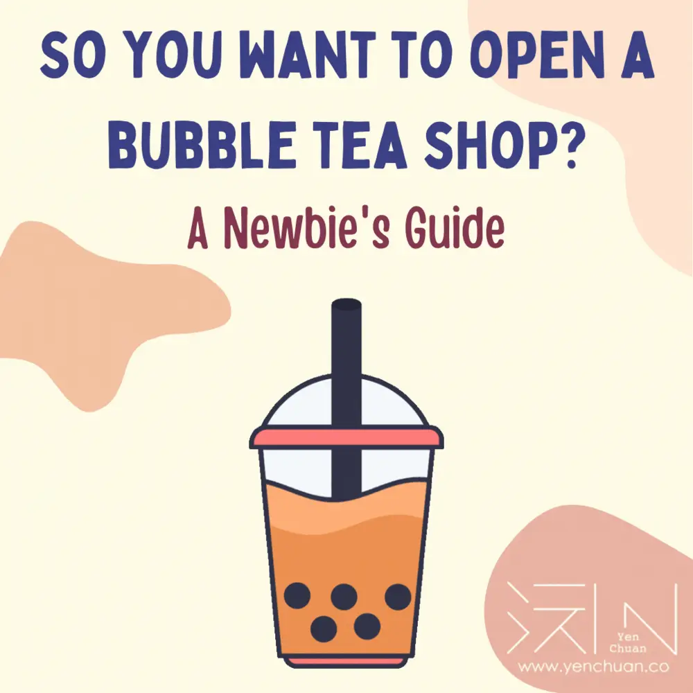
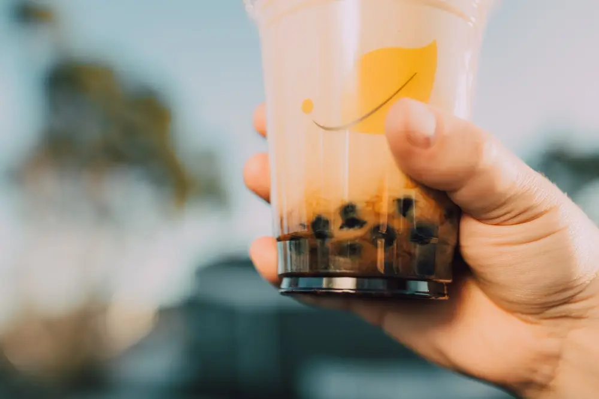

Articles / Tips & trends
So you want to open a bubble tea shop?
2021-07-21 · Tips and Trivia


Bubble tea has taken the world by storm in the past few years, and you often hear things about “Bubble tea crazes” in Japan and other countries. Naturally many people are gearing up to jump on the bandwagon by opening their own bubble tea shops.
Opening a new business sounds pretty daunting, and there are indeed many things to bear in mind when planning your new shop. Want to learn more? Here’s our quick guide to opening a new bubble tea shop!
Getting Started
Before jumping into buying materials and building your store, sit down and start planning for your new shop first.
What kind of shop do you want to open? Do you need your own brand, or would franchising with an existing brand be good to go? What kind of customer would you want to attract? How much are you planning to spend?
What kind of bubble tea shop do I want?
Bubble tea shops could be as simple as a small stand by the roadside, or a full shopfront stocked with drinks and snacks.
For newcomers to the business, running a small stall might be a good way to keep the costs relatively low. On the other hand, having a proper shopfront would allow more space to work with, and areas to advertise using signs and shop design.
Think about what kind of items you want on your menu. Do you only need drinks or do you want to sell snacks as well? This will affect both the machinery you need, and how large your shop needs to be to house them.
A floor plan can help you figure out how to place your equipment, so don’t forget that!
Franchising or Independent?
Aside from creating your own brand, franchising with an existing brand is also an option for creating a new business.
Franchising usually has a higher up-front cost, since you’ll also need to pay an additional franchising fee aside from other expenses. Moreover you may need to share a portion of your sales with the franchise for royalties and marketing fees.
On the upside, you’ll be running an existing brand so you don’t need to spend as much time and effort to build up a new one. There’s also more support in terms of marketing, training and supplies.
Planning to do franchising? Compare between different brands, and pay attention to the franchising and royalties they require. Check your budget before making a decision!
What kind of customers?
What kind of customer would you like to attract? This might affect what location and type of store would be most suitable.
For example, if you’re planning to attract teenagers and students, setting up shop near campuses or popular shopping districts would be a good idea.
Want to cash in on summer vacations? A pop-up store near tourist hotspots would be perfect!
Want the most flexibility? Why not run a food truck? Keep the customers flowing by driving to different locations!
Think about where your customers often visit, and what kind of drinks will appeal to them, and you’ll have a plan going on in no time!
What about budget?
The costs of running a new bubble tea shop can vary quite a lot, depending on the type of store you’re running, where your store is located in and how many items you want to carry on your menu.
A simple stall might only cost around $40,000 USD for initial investment, but larger shops can easily cost over $100,000 USD. If you’re planning to go for franchising, the initial costs might go even higher than that.
Think about how much you can afford, and adjust your business plans to match.

Branding
If you want to make your own brand, then things gets complicated. What kind of brand identity do you want? What brand name do you want, and do you have a logo to go with it?
Marketing is also important too – how would you advertise your new brand? By social media? Local newspapers? An eye-catching website? It pays to have a marketing plan ready for your brand!
How would you design your shop to match your brand’s theme? Many bubble tea shops use custom-printed cups and sealing film to sell their branding, so that’s another thing to consider too.
Licenses
Much like any other business, you will need to register your company and apply for the relevant licenses/documents first before you can open your bubble tea shop.
Since most bubble tea materials are produced in Taiwan (such as the products we offer), you will likely need to import those from overseas. Don’t forget to check your country’s import rules, and see if you need an import license!
Workers and Training
Unless you’re planning to run the store all on your own, eventually you’re going to need workers.
Bubble tea isn’t exactly hard to prepare, but getting the hang of using the machinery and mixing the ingredients still takes practice.
Think of how many staff you need to hire, and how long it takes to train them up properly.
Budget Matters
Aside from rent, franchising and licenses, what costs do you need to account for? Here’s a quick rundown:
Ingredients
Depending on the items in your menu, you will need a range of ingredients to prepare your drinks.
The easiest way is to use pre-mixed milk and milk tea powders. But if you want to brew your own tea, you might want to look into different tea blends and syrups to use
Don’t forget the tapioca pearls! There are also other toppings you can use!
Machinery
Getting the right machinery for the job can make your life much easier. Fridge-work tables, tapioca pearl cookers, blenders, fructose dispensers and cup shakers are a staple in most bubble tea shops.
Planning to use sealing film instead of lids? Be sure to get a cup-sealing machine to go with it – check the cup diameter first!
Based on what menu items you have, you may also need specialized machinery such as snow ice shavers too.
Cups and utensils
Cups, lids and straws may sound like an afterthought, but these also play a big part in your brand identity!
Bubble tea cups come in different materials, shapes and sizes – pick what is most suitable for the drinks you want to sell. Be careful if you’re selling hot-drinks, as not all materials are heat-resistant.
Branding
If you want to use your own brand, there may be additional design fees for your brand image, store design, and marketing materials.
You might want to have your brand trademarked too.
Want to show your brand on your cups and sealing film? Consider custom-printing those items!
Wondering where you can get those items?
You’re in luck – we can offer a full range of items every bubble tea shop will need!
Ready to start building your bubble tea shop?
Once you’re done with the planning process and have the funds you need, it’s time to set your plan in motion.
First get your company registered and obtain the licenses needed, then start sourcing for items and preparing your store for operations. Hire and train the employees you need, and jump-start your marketing campaign.
Good luck with your new business!